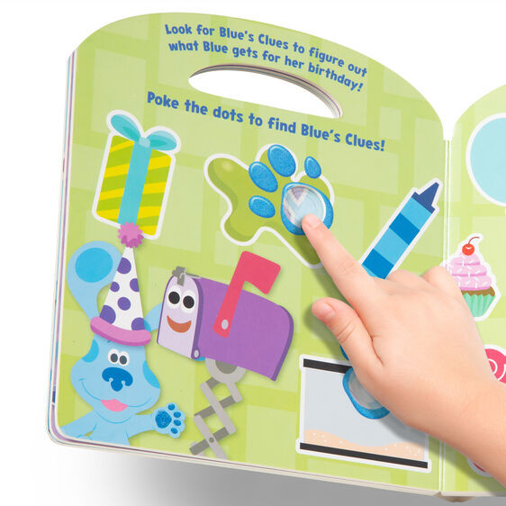
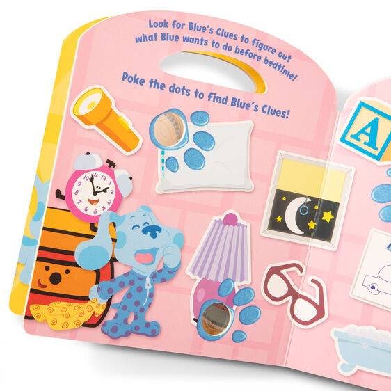
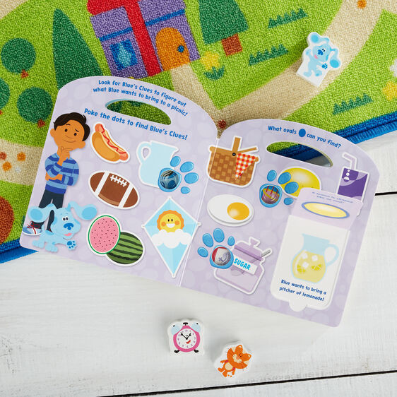

Blues Clues Poke-a-Dot - Shapes with Blue
Product number: 33006
R215Learn shapes and solve 5 games of Blueâs Clues with this 10-page interactive sturdy Blueâs Clues & You! board book with buttons to press and pop on every page Poke a popping button for each clue, and then reveal the answer by lifting the flap Built-in carrying handle for easy portability Blueâs Clues & You! promotes kindergarten-readiness, inspiring confidence, empowerment, and kindness in preschoolers as they develop their problem-solving, social, and developmental skills through play Makes a great gift for preschoolers, ages 3 to 5, for hands-on, screen-free play Ages 3+
Enquire about this product



Blues Clues Poke-a-Dot - Shapes with Blue at Kids Corner KZN
Blues Clues Poke-a-Dot - Shapes with Blue is part of our Paw Patrol and Blue Clues collection. Kids Corner KZN stocks toys for learning, pretend play, creative play, gifting and everyday childhood discovery in South Africa.
Browse more Paw Patrol and Blue Clues toys